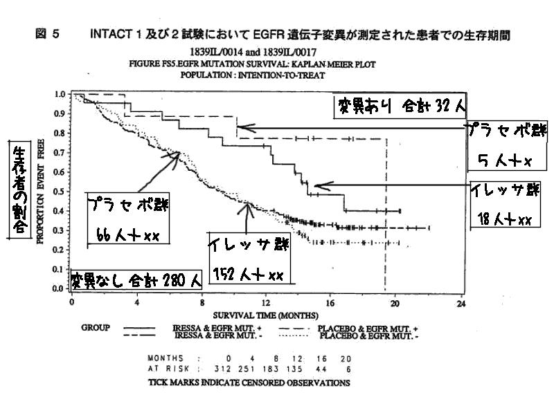
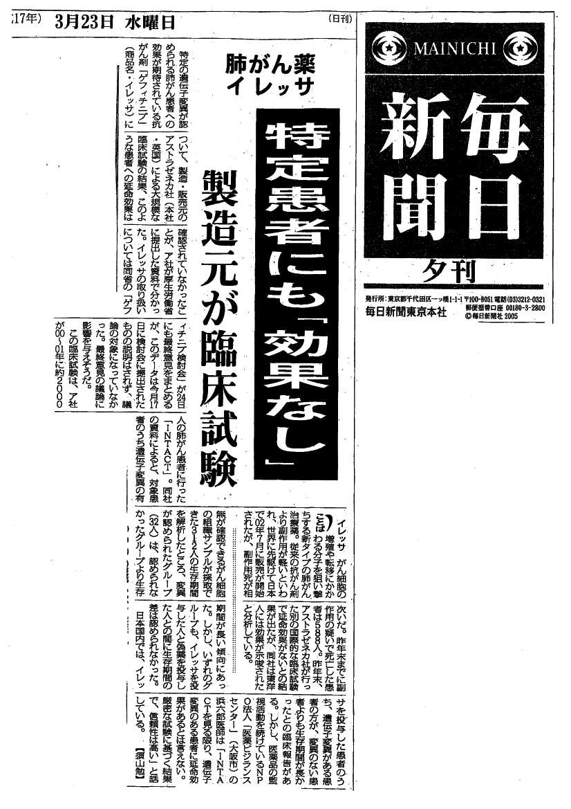

日本人や東洋人にはイレッサの延命効果が期待できるかもしれない、とする最大の根拠となっているのが、一部の患者に見られる「細胞表面のたんぱく質」すなわち『上皮成長因子受容体(EGFR)』の癌細胞での遺伝子変異である。3月17日に開かれたゲフィチニブ検討会（資料：文献１）では、この遺伝子変異を「腫瘍縮小効果を予測する重要な因子」としつつも、測定方法等が確立・普及していないことや、変異のない患者でも腫瘍が縮小しうることなどを理由に、遺伝子変異の測定をイレッサ使用の条件にはしないとの意見が大勢を占めた。
しかし、NPO法人医薬ビジランスセンターで17日の検討会に提出されたデータを詳細に検討した結果、アストラゼネカ社自身、「EGFR遺伝子変異がある患者に限ってもイレッサは延命効果がない」ことを認めていることが判明した。このデータは、大規模第III相臨床試験（INTACT）の対象患者の遺伝子変異を調べて解析した結果を厚労省の求めに応じてアストラゼネカ社が提出したものである（下図：資料No５、p1-10の図５：文献２）。
| INTACTは、未治療の進行非小細胞性肺癌患者合計約2100人を対象にした第III相試験。化学療法剤2剤へのイレッサの上乗せ効果をみたもの（イレッサ群約1400人,プラセボ群約700人）。このうち、EGFRの遺伝子変異の解析が312人に実施され、合計32人が遺伝子変異あり、280人は変異がなかった（ただし変異のありなし別にイレッサ群とプラセボ群の人数は示されていない）。上図中の各群人数（66、152、５、18人）は、腫瘍縮小効果が判定された人数である。いずれにしても、アストラゼネカ社が言うように、遺伝子変異のある人でも、イレッサの延命効果は示されなかった。したがって、遺伝子変異の有無を調べてもイレッサを安全で有効に使用する方法にはなりそうにない、と結論付けられる。上図□内は筆者が追加したもの。 |
INTACT-1と-2はいずれも、化学療法未治療の進行性非小細胞肺癌患者を対象に、プラチナ製剤を含む2剤併用化学療法に加え、イレッサ250mg、イレッサ500mg、もしくはプラセボを投与した合計約2100人を対象とした大規模第3相臨床試験である（標準的抗がん剤にイレッサを上乗せした場合の効果をみたもの）。この臨床試験の結果は、いずれの試験も、イレッサ群とプラセボ群の生存期間に有意の差はなく、INTACT-1ではむしろ、イレッサ群の方が短命の傾向があったほどである。
上記図５のグラフは、INTACT-1と-2の対象者の中から、がん組織の生検ができていて、EGFR遺伝子変異の有無が検査できた人について、変異の有無別、イレッサ使用の有無別に生存期間を比較したものである。
遺伝子変異があった人が32人（イレッサ群とプラセボ群合計）、遺伝子変異がなかった人が280人（同合計）いた。
アストラゼネカ社は、このデータに関して、「EGFR遺伝子変異陽性および陰性のいずれの場合も、イレッサ投与患者群とプラセボ投与患者群間で生存期間に差は認められなかった。これは両試験の対象患者全体に共通しており、イレッサ投与により生存期間の延長はもたらさなかった。」と、EGFR遺伝子変異が陽性でもイレッサが生存期間を延長しないことを明瞭に述べている。
ここで「両試験」とは、INTACT-1とINTACT-2のことを意味していよう。プラセボ群で変異のある人の数は少ないが、INTACT-1とINTACT-2で生存期間に差がないことが、共通して認められたため、「イレッサ投与により生存期間の延長はもたらさなかった。」と極めて明瞭に、ほとんど断定的に記載している。
また、そのあとでは、「EGFR遺伝子変異と生存期間の解析から、遺伝子変異のある患者では変異のない患者よりも長い生存期間が得られることを予測可能であるように見える。しかし、EGFR遺伝子変異によるイレッサ治療のベネフィット予測はできなかった。」と、ここでも「EGFR遺伝子変異を検査しても、生存期間の延長が期待できない」ことを明瞭に述べている。
ただし、遺伝子変異とイレッサの効果に関する報告の概要（資料No５、概-1,2）には、この内容が全く記載されていない。「概要」中の「まとめ」では、「EGFR遺伝子変異と、----全生存期間との関連については全く不明である。」と、本文と異なる内容を記載している。
「イレッサ投与により生存期間の延長はもたらさなかった。」「EGFR遺伝子変異によるイレッサ治療のベネフィット予測はできなかった。」ということは、いわば、イレッサの生命線に触れることであるため、まとめには記載したくない、というアストラゼネカ社の気持ちを如実に表していよう。
イレッサが全ての肺がん患者を対象として延命をもたらさなかったとしても、「EGFR遺伝子変異」というスクリーニングをすれば「延命効果」をもたらすかもしれない、というわずかの望みを残して、イレッサの使い道を探っていたといえよう。ところが、現在最も有望ともいえるEGFR遺伝子変異が陽性の人でも延命できなかったのであるから、これを前面に打ち出しては、最後の望みも絶たれることになる。まとめに記載したくないのは当然であろう。
今回判明したデータは、提出された資料の中に含まれていた。EGFRの遺伝子変異は、予後改善の指標にならないことをメーカーも十分承知していること、したがって国も十分承知していることを示している。
INTACTのデータから推測するかぎり、アストラゼネカ社自身が認めているように、EGFR遺伝子変異は、生存率改善を予測する指標にはなりそうにない。
ISEL試験では生存期間と最も関連の深い診断からランダム化までの期間に有意の偏りがあり、それが生存期間比較の調整因子に取り入れられていなかった。それで調整すれば、おそらく生存期間に有意の差はなくなると思われる。
ISEL試験の遺伝子解析の結果を待つまでもなく、現在では最も有望とされている予後予測因子である｢EGFR遺伝子変異｣の検査も無意味であるとほぼ結論できるのである。
したがって、EGFR遺伝子変異の検出方法が一般的方法として普及したとしても、寿命延長が期待できる肺癌患者をまえもって知ることはできそうになく、イレッサを安全で有効に使うことにはなりそうにない、と、結論せざるをえない。
ゲフィチニブ検討会委員長・各委員に対して以下の内容で要望書を提出した。（全文はこちら）
また、尾辻厚生労働大臣あてに、要望書を提出した。主な内容は以下のとおり。（全文はこちら）
毎日新聞（東京本社）が3月23日の夕刊1面で、NPO法人医薬ビジランスセンターが指摘した「EGFR遺伝子変異のある患者にもイレッサは延命効果がない」との事実をアストラゼネカ社の大規模な臨床試験の結果で判明していたことを報道するとともに、最終回の24日検討会の「最終意見の議論に影響を与えそうだ」との観測を述べている。
また、NPO法人医薬ビジランスセンター浜のコメントとして ｢『INTACTを見る限り、遺伝子変異のある患者に延命効果があるとはいえない。厳密な試験に基づく結果で、信頼性は高い』と話している。｣と報道した。
